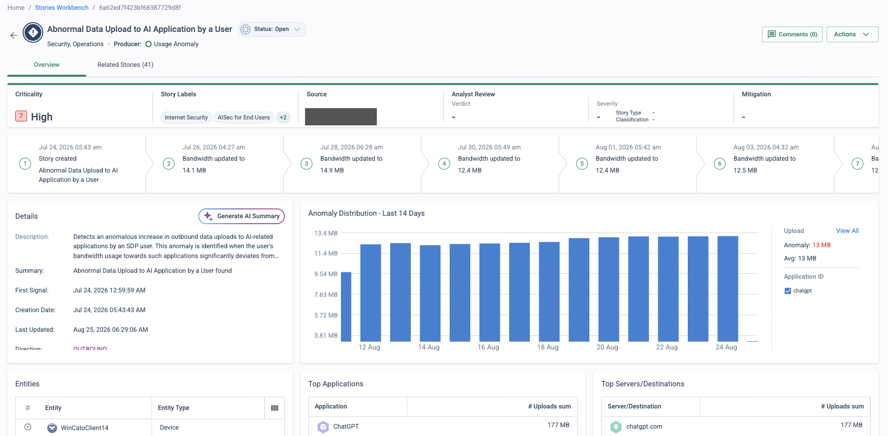

Why this matters
The Digital Operational Resilience Act (DORA) is an EU regulation that applies from 17 January 2025. It covers financial entities — banks, insurers, investment firms, payment institutions and more — and extends to critical ICT third-party providers. The intent is blunt: a financial firm must keep operating through ICT disruption, detect and report incidents quickly, and stay in control of the third parties its digital operations depend on.
The objective for the CISO, COO and risk function is not just to be resilient — it is to evidence resilience: documented ICT risk management, demonstrable failover under stress, incident timelines assembled fast enough to meet reporting deadlines, and a managed register of ICT providers.
The stack itself becomes the resilience problem
Most financial entities run their WAN and security estate across a patchwork of vendors — MPLS and SD-WAN providers, firewall clusters, VPN concentrators, SWG, CASB, monitoring tools. Under DORA, that architecture works against you four times over:
Every vendor is a registered third party
Each point product is another ICT provider to assess, contract, monitor and carry in the register of information — with its own certifications to chase, its own exit plan to write, its own concentration-risk questions to answer.
Resilience is a chain of single points of failure
Appliance HA pairs, regional VPN headends and single-carrier circuits each fail in their own way. Demonstrating that a critical function survives stress means testing every link of the chain — and its interactions.
Evidence lives in a dozen consoles
Incident reporting timelines are unforgiving, but the timeline itself is scattered: firewall logs here, proxy logs there, VPN logs somewhere else — different formats, clocks and retention. Assembly takes days, not hours.
Policy drift undermines risk management
A documented ICT risk framework assumes the controls are actually consistent. With per-site appliances and per-region policies, proving the same control applies to every user, branch and cloud workload is guesswork.
“Who owns your DORA programme — risk, compliance or IT — and what is still open on their gap analysis?” · “How many of the entries in your register of information for ICT providers are network and security vendors?” · “When something breaks today, how long does it take to assemble a timeline solid enough for an incident report?”
DORA's five pillars, mapped to the platform
Cato does not make anyone “DORA compliant” — compliance is the entity's own programme. What the platform does is shrink the problem and supply the controls and evidence each pillar asks for:
| DORA pillar | What it demands | How Cato helps |
|---|---|---|
| ICT risk management | A governed framework of identified assets and consistent, documented controls across the estate. | One converged platform, one policy set: FWaaS, IPS, ZTNA and data protection configured once and enforced identically for every site, user and cloud — far fewer moving parts to document and govern. |
| Incident reporting | Rapid detection, classification and reporting of major ICT incidents within tight timelines. | Full-traffic telemetry in one data store; XDR incident stories correlate raw events into a prioritised timeline of what happened, to whom, when; the Audit Trail records every configuration change — the raw material of a report, on hand. |
| Resilience testing | Regular testing that critical functions survive stress, failure and degradation. | Failover is demonstrable, not theoretical: pull a link or steer away from a PoP and watch traffic re-route across the backbone; Experience Monitoring evidences what users actually experienced during the test window. |
| ICT third-party risk | Assess, contract, register and monitor ICT providers; manage concentration and exit risk. | One assessed provider replaces many point vendors — one due-diligence exercise against Cato's published certifications, one register entry where there were many, one relationship to monitor. |
| Information sharing | Arrangements to exchange cyber threat information and intelligence between entities. | Structured XDR incident stories give your team shareable, well-formed incident data; protections developed by Cato's security research are applied in the cloud for every customer, so shared intelligence turns into applied defence. |
Resilience by design, evidence by default
Cato's global private backbone is built from PoPs interconnected across multiple Tier-1 carriers. Sockets and clients connect to the nearest PoP and automatically fail over to the next-best PoP when a carrier path or PoP degrades — the self-healing behaviour DORA's resilience testing is meant to prove. Because every flow crosses a PoP running the full security stack, the same architecture that delivers resilience also delivers the telemetry: one event stream feeding XDR stories, the Audit Trail and Experience Monitoring.

Self-healing backbone
Multiple Tier-1 carriers between PoPs and automatic PoP failover for sockets and clients — resilience is the architecture's default behaviour, not a bolt-on DR plan.
Evidence on demand
Full-traffic telemetry, XDR incident stories and an exportable Audit Trail give incident-report authors a correlated timeline instead of a log-collection project.
A shorter third-party register
One assessed provider with published certifications replaces a stack of point vendors — one due-diligence pack, one contract, one entry to monitor.
Consistent risk posture
One global policy enforced identically everywhere makes the documented control framework match reality — and keeps it matching as the estate changes.
Say “Cato supports your DORA programme” — never “Cato makes you DORA compliant”. Compliance belongs to the entity: its governance, its testing programme, its register. Cato reduces the surface area and supplies controls plus evidence for each pillar.
Typical financial-services policies — a starter rulebase
DORA does not prescribe firewall rules, but a financial entity's control framework has to look like one on the wire. The blueprint below is the shape a converged policy tends to take for a bank, insurer or investment firm: latency-sensitive trading traffic protected, payment and settlement systems tightly scoped, finance data kept out of unsanctioned places, information barriers enforced by group, and third-party access reduced to named app segments.
These rules are illustrative — a starter blueprint to adapt to your own estate, app inventory and risk appetite. Roll them out monitor-first: run each rule in event/monitor mode, review what it would have caught on real traffic, then tune the scope and switch to enforce. Nothing here is regulatory advice — the control decisions, and whether the result satisfies your DORA programme, belong to your risk and compliance functions.
| # | Name | Source | App / Category / Data | Action | Track |
|---|---|---|---|---|---|
| 1 | Market-Data-Priority | Trading-Desk | Market-data feeds · trading platforms | Allow · QoS priority · documented TLSi bypass | Event |
| 2 | Settlement-Allowlist | Payments-Ops | Named payment & settlement systems | Allow | Event |
| 3 | Settlement-Block-Remainder | Payments-Ops | Any other destination | Block | Event |
| 4 | Finance-Data-Exfil-Block | Any | Data: account-number & card/PAN profiles → unsanctioned cloud storage | Block | Event |
| 5 | Deal-Team-Barrier | Deal-Team (IdP group) | Restricted deal-room app segment (others: implicit deny) | Allow | Event |
| 6 | Outsourcer-ZTNA-Only | Outsourcer (ZTNA) | Named application segments only | Allow (ZTNA) | Event |
| 7 | Block-Anonymisers-Mining | Any | Category: Anonymisers · Crypto-mining | Block | Event |
| 8 | GenAI-Monitored-Redact | Any | GenAI apps (User Interaction Policy) | Monitor · redact finance data | Event |
- The market-data bypass is a named exception, not a hole (rule 1). Trading and market-data feeds are latency-sensitive, so where inline TLS inspection would add unacceptable delay to a specific feed, that app is handled by a documented, risk-accepted TLS-inspection bypass — recorded in the Audit Trail and reviewed on a schedule, scoped to the named apps only. Inspection stays on for everything else, and the bypass itself is evidence the exception was a decision, not a gap.
- Rule 5 is an information barrier expressed as a rule (M&A / insider teams). A group-scoped allow over an implicit deny keeps a deal team inside its own segment and everyone else out — the same ethical-walls pattern used for legal matters, applied to insider-sensitive transactions. See Confidentiality & Ethical Walls for the rule-pair design and its limits.
- Rule 8 keeps GenAI usable without leaking finance data. The User Interaction Policy monitors prompts to sanctioned assistants and redacts account numbers and card data before they leave, rather than blocking GenAI outright — see GenAI Security for End Users.
Finance scenarios
Where this blueprint earns its keep — the moments a financial entity is asked to prove it, not just describe it:
DORA incident-evidence drill
Pick a window and export the events timeline for it: every flow, verdict and user attribution on one clock, alongside the correlated XDR story. Practise turning that into the skeleton of a major-incident report before a real incident forces you to.
Regulator or audit visit
Show the exportable rulebase, the events of those controls firing on live traffic, and an attributable Audit Trail of every configuration change. Most questionnaire sections about network and access controls are answered from a single console.
Onboarding an appointed representative or branch
A new AR or branch inherits the same policy set on day one — the same information barriers, DLP and third-party controls — with access driven by IdP group membership rather than a bespoke per-site rulebase to build and later reconcile.
Resilience test day
Pull a last-mile link or steer traffic away from a PoP with Experience Monitoring watching, then capture what users experienced before, during and after as test-file evidence. See Resilient Site Design for the failover building blocks.
How to run the demo
Ask where their DORA gap analysis hurts most: resilience testing evidence, incident-report assembly, or the sheer size of the third-party register. Lead the demo with that pillar and let the table above carry the rest.
-
Frame with the pillar map
Walk the five-pillar table and agree which pillars are owned by the people in the room. Anchor: “the fewer ICT providers and consoles in scope, the smaller every one of these workstreams gets.”
-
Show the resilient fabric
Monitor → Topology
Open the live topology: London DC and Manchester DC sockets, dual uplinks, HA state, and each site's connected PoP. Explain the failover behaviour — if a link, carrier path or PoP degrades, the socket reconnects to the next-best PoP automatically, with no operator action.
-
Evidence for resilience testing
Monitor → Experience Monitoring
Show experience scores per site and user. Position it as the test-evidence tool: run a controlled failover window, then show what users actually experienced before, during and after — a screenshotable artefact for the testing file.
-
An XDR incident story as a report skeleton
Monitor → Threats Dashboard
Open a detection and pivot into its XDR incident story: correlated events, affected users and sites, a timeline, and a plain-language summary. Anchor: “this is the skeleton of a regulator-facing incident report — assembled for you, not by you.”
-
Drill to the raw evidence
Monitor → Events
Filter the unified event stream to the story's time window: every flow, verdict and user attribution in one place with one clock. Contrast with collecting logs from firewall, proxy and VPN estates separately.
-
Governance evidence: the Audit Trail
Administration → Audit Trail
Show who changed which policy, when, from where — and export it. This answers the “demonstrate control over configuration changes” conversation in one screen.
-
Close on third-party risk
Count the vendors the platform displaces, then point at Cato's published security and compliance certifications as the due-diligence pack. One provider assessed once — instead of a register full of point products.
How to prove it in the customer's tenant
The demo argues the pillar map; this PoV runs a DORA-evidence pilot on the customer's own tenant — one branch socket and a pilot user group, with each success criterion mapped to a pillar from the table above and each producing an artefact a DORA workstream owner could file: policy exports for ICT risk management, a staged benign incident traced on one clock for reporting readiness, a resilience drill with user-experience evidence, and a due-diligence-plus-control pack for third-party oversight. Agree the criteria before configuring anything, per Running a Cato PoV — and put someone from risk or compliance on the register as an owner, because they are the ones who will file the evidence.
This runbook is authored from Cato's published documentation and is not legal or regulatory advice. The pilot produces control and evidence artefacts; whether they satisfy a DORA obligation is a judgement for the entity's risk and compliance functions and their counsel. Reuse only what this page states on dates — DORA applies from 17 January 2025 — and do not improvise incident-classification thresholds or reporting deadlines in front of the customer.
| Success criterion (pillar) | What we demonstrate | Evidence artefact | Where in the CMA |
|---|---|---|---|
| Policy as an artefact (ICT risk management) | The pilot's controls exist as one documented policy set covering the socket site and the pilot users — a slice of the sector blueprint, built monitor-first | Rulebase CSV exports (Internet firewall, WAN firewall, TLS inspection, application control) plus dated rulebase screenshots with hit counts | Security → Internet Firewall · Security → WAN Firewall |
| Incident-reporting readiness (incident reporting) | A staged, benign incident is detected and traced end-to-end: every event of the window on one clock, attributed to user and device — the raw material of an incident report, not the report itself | The filtered events view and a CSV export of the incident window; the correlated story screenshot where the account is licensed for stories | Monitor → Events · Monitor → Threats Dashboard |
| Resilience-drill evidence (resilience testing) | A controlled failover drill on the pilot site, with what users actually experienced captured before, during and after the window | Experience Monitoring captures around the drill window plus the drill log — method per the Resilient Site Design PoV drill card | Monitor → Experience Monitoring |
| Provider oversight (ICT third-party risk) | Due diligence on Cato itself from published certifications — and proof the customer stays in control: every configuration change of the PoV recorded with previous and new values | The certification pack from Cato's security & compliance page; filtered Audit Trail captures of the PoV's changes | Administration → Audit Trail |
| Monitor-first verdicts (the blueprint enacted) | After at least a week of live traffic, each blueprint rule has an evidence trail of what it would have caught — the tuning review that precedes any enforcement decision | Event rows per rule over the pilot window, reviewed rule by rule at the weekly sync and recorded in the register | Monitor → Events |
- Scope: one branch socket plus a pilot group on the Cato Client, and a named owner from risk or compliance on the test-case register — DORA is an organisational programme, and evidence without a filing owner goes nowhere.
- Licences: IPS and Anti-Malware enabled (monitor mode is fine) for the staged incident. Correlated stories need the paid XOps (Detection & Response) tier or MDR — the readiness criterion stands on the events evidence either way. Full Experience Monitoring needs the DEM licence.
- TLS inspection staged first where content-level proof matters: the finance-data DLP rule and the HTTPS variant of the benign incident both depend on it. Stage per TLS Inspection: Staged Rollout Playbook — and note the standard bypass blueprint exempts sensitive categories including Finance, which matters more to this vertical than most.
- Identity integration connected and the pilot group syncing (Identity Integration Design) — regulator-shaped evidence says "Priya's device", not "an IP address".
Configuration walkthrough — assembled pillar by pillar
-
ICT risk management: enact the blueprint slice, monitor-first
Security → Internet Firewall Security → WAN Firewall
Build a two-to-three-rule slice of the sector blueprint scoped to the pilot site and group — typically the settlement allowlist pair, the finance-data DLP rule and the anonymiser/mining category rule — every rule tracking Event and nothing enforcing until the week-of-evidence review. The point is not the rules themselves but that one policy set covers the site and the users identically: the documented control framework matching the wire.
-
ICT risk management: export the policy artefacts
Security → Internet Firewall
Use the rulebase Export button — the CSV export covers the Internet firewall, WAN firewall, TLS inspection and application control policies, rules in priority order with exceptions beside their parents (an Editor-role admin is needed). Dated and filed weekly with the register, these are the pilot's policy-inventory artefacts: the control framework as a document, regenerated on demand rather than maintained by hand.
-
Incident reporting: stage the benign incident and trace it
Monitor → Events
On a date in the drill plan, run the KB's documented EICAR test from a pilot machine — the HTTP variant fires without inspection; the HTTPS variant proves the TLSi path. Then assemble the timeline: filter Events to the incident window (Anti-malware preset, user, site), walk it on screen — every flow, verdict and attribution on one clock — and export the window to CSV (up to 250,000 events, spans up to 31 days). Where the account has the XOps tier, pivot into the correlated story and capture it. Position with care: this is the underlying evidence a reporting workflow consumes — classification against DORA's thresholds and the report itself belong to the entity.
-
Resilience testing: run the drill on the pilot site
Monitor → Experience Monitoring
Run a controlled failover drill in an agreed window — method, sequencing and the last-mile variations are the Resilient Site Design PoV's drill card; don't restate it, reuse it. What this PoV adds is the evidence discipline: Experience Monitoring captures before, during and after the window, filed with the drill log so the testing-programme owner gets "users stayed at Good through link loss" as a dated artefact rather than an anecdote.
-
Third-party oversight: the due-diligence pack and the control evidence
Administration → Audit Trail
Hand the vendor-assessment workstream Cato's published certifications — SOC 2 and SOC 3, PCI DSS Level 1, ISO/IEC 27001, 27017, 27018 and 27701, Cyber Essentials, CSA STAR, ENS — as the input to one due-diligence exercise instead of many. Then show the other half of oversight: the Audit Trail records every addition, deletion and edit of the PoV with previous and new values, attributed to the admin who made it — the customer demonstrably in control of what the provider's platform enforces. Admin logins themselves land in Events under the "Cato Management Application" sub-type.
What good output looks like
The artefacts are the console, captured dated as they land: rulebases with hit counts, the staged incident's window in Events, Experience Monitoring around the drill, and Audit Trail diffs of the PoV's own changes.



Troubleshooting
The staged incident is silent
Check Anti-Malware/IPS are enabled for the pilot site (monitor mode counts), and which variant you ran — the HTTP EICAR test fires without inspection; HTTPS is only caught once TLS inspection applies to that flow. Events usually land within about five minutes but can lag up to 30 — wait before concluding failure.
No correlated story appears
Story generation needs the paid XOps tier or MDR — without it, events still flow but stories are not generated. Don't let a licence mismatch fail the criterion: the readiness evidence is the events timeline; the story is the bonus where licensed. See SOC Modernisation with XDR & MDR for the full licensing picture.
The finance-data rule sees nothing
Content-level DLP needs the flow inspected — and the standard TLSi blueprint bypasses sensitive categories including Finance, so the very destinations this vertical cares about may be exempt. Review the bypass scope against the pilot's flows and make any carve-out a documented, risk-accepted decision (that record is itself pillar-one evidence).
Events read as IP addresses, not people
Identity attribution lags when the IdP sync is stale or the pilot group is outside the synced scope. Fix identity before capturing any evidence you intend to file — re-shot artefacts with names are cheap in week one and expensive at wrap-up.
An Audit Trail entry seems missing
Changes can take several minutes to appear, and the page shows up to three months at a time within its 12-month history — check the window before doubting the record. Capture Audit Trail evidence monthly rather than saving it all for the final week.
An events export comes back truncated
The CSV export caps at 250,000 events and the page at a 31-day span. Export per drill window rather than per PoV — narrower, dated exports are also better evidence, because each maps one-to-one to a register entry.
Gotchas & clean exit
- DORA is organisational: the platform contributes controls and evidence; governance, the testing programme, the register of information and the information-sharing arrangements belong to the entity. The fifth pillar in particular is a process between firms — structured incident data feeds it, but no product performs it.
- No regulatory reports: the platform assembles the timeline evidence underneath a report. Incident classification against DORA's thresholds, the deadlines and the submission itself are the entity's — never demo "the report" as an output.
- The trust page is not a DORA attestation: Cato's published certifications are strong due-diligence input, but the page makes no DORA claim — let the customer's third-party-risk framework do the assessing.
- Retention boundaries: the Audit Trail holds 12 months and sits outside the data lake, and event exports are window-capped — dated exports filed as they land are the durable record, not a wrap-up-day harvest.
- Monitor-first is the finding, not a limitation: a week of "would have caught" evidence is precisely the tuning review DORA-minded auditors like to see documented — resist switching anything to enforce inside the PoV window unless the customer asks and the register records it.
Exit: disable or delete the pilot's blueprint rules (monitor-mode, so removal is invisible to users), remove test files from the drill machines, and export the final artefact set — rulebase CSVs, event exports, Experience Monitoring captures, certification pack — before tenant access ends. The Administration → Audit Trail entries recording both the build and the unwind make a tidy closing exhibit: the platform arriving, operating and leaving under the customer's documented control.